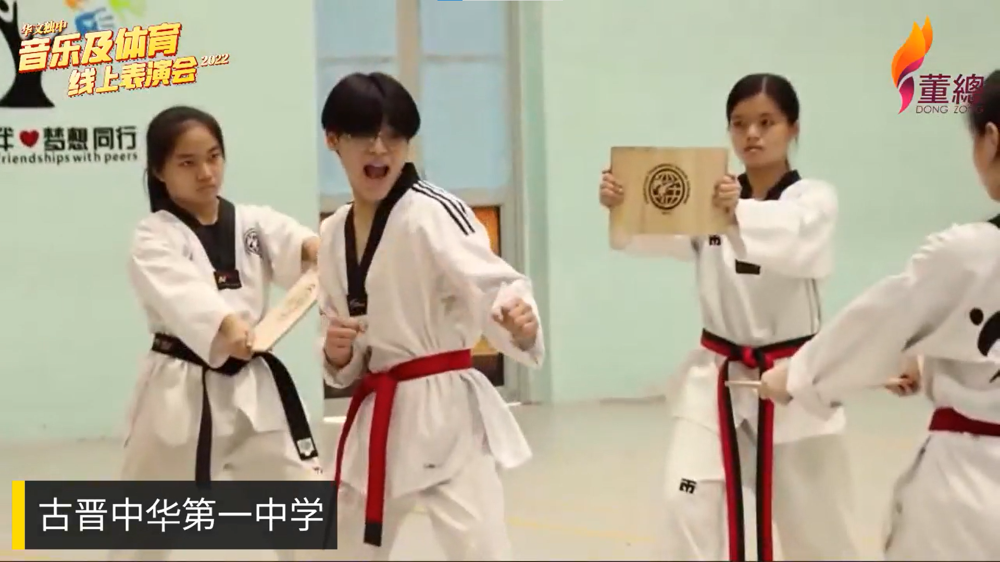
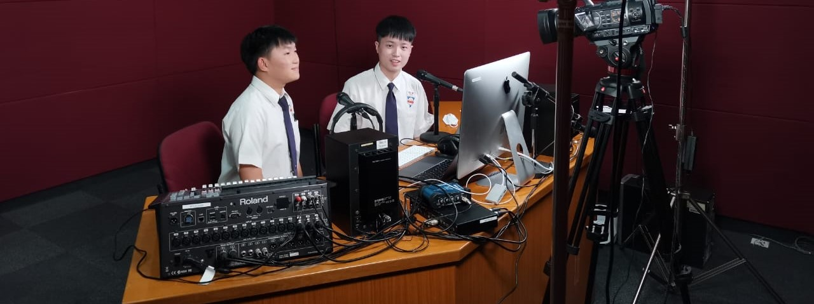

2022年华文独中音乐和体育线上表演会
为了庆祝我国65周年国庆日和马来西亚日，董总学生事务局汇集13所华文独中的学生社团，于2022年9月15日晚上8时，在董总脸书直播“华文独中音乐和体育线上表演会”。
参与此表演会的学校包括芙蓉中华中学、槟城锺灵独立中学、宽柔中学古来分校、民都鲁开智中学、巴生兴华中学、古晋中华第一中学、新山宽柔中学、亚罗士打吉华独立中学、沙巴崇正中学、笨珍培群独立中学、吉隆坡尊孔独立中学、巴生滨华中学、吉隆坡坤成中学和新文龙中华中学。
古晋中华第一中学表演跆拳道和柔道。各校学生呈现的音乐表演项目有管乐、合唱、口琴、吉他、弦乐、钢琴、华乐和二十四节令鼓；体育表演项目则包括武术、跆拳道、柔道和扯铃。此外，学生们也以表演的形式将花式篮球、跳绳等运动项目带进大众的视野。
除了精彩的表演节目，来自芙蓉中华中学的两位学生曹竣翔同学和吴宇峰同学担任主持人，为大家带来了充满活力和朝气的观看体验。
虽然新冠肺炎疫情对各校带来冲击，但它也使华文独中加强了信息与通信技术（ICT）的应用以及线上教学与学习的脚步，同时也让学生有更多表现的平台和机会。此次活动得以圆满举行，要特别感谢新纪元大学学院媒体研究系为此活动提供直播场地和器材，同时也要感谢媒体研究系学生胡志安和姚嘉洁协助进行导播工作和提高技术指导。
欢迎浏览董总学生事务局网页，以了解更多活动内容，以及观赏完整直播录影。
芙蓉中华中学曹竣翔同学和吴宇峰同学在直播室主持线上表演会。